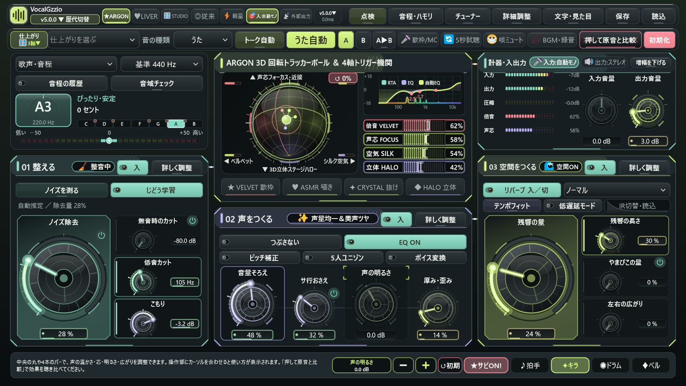
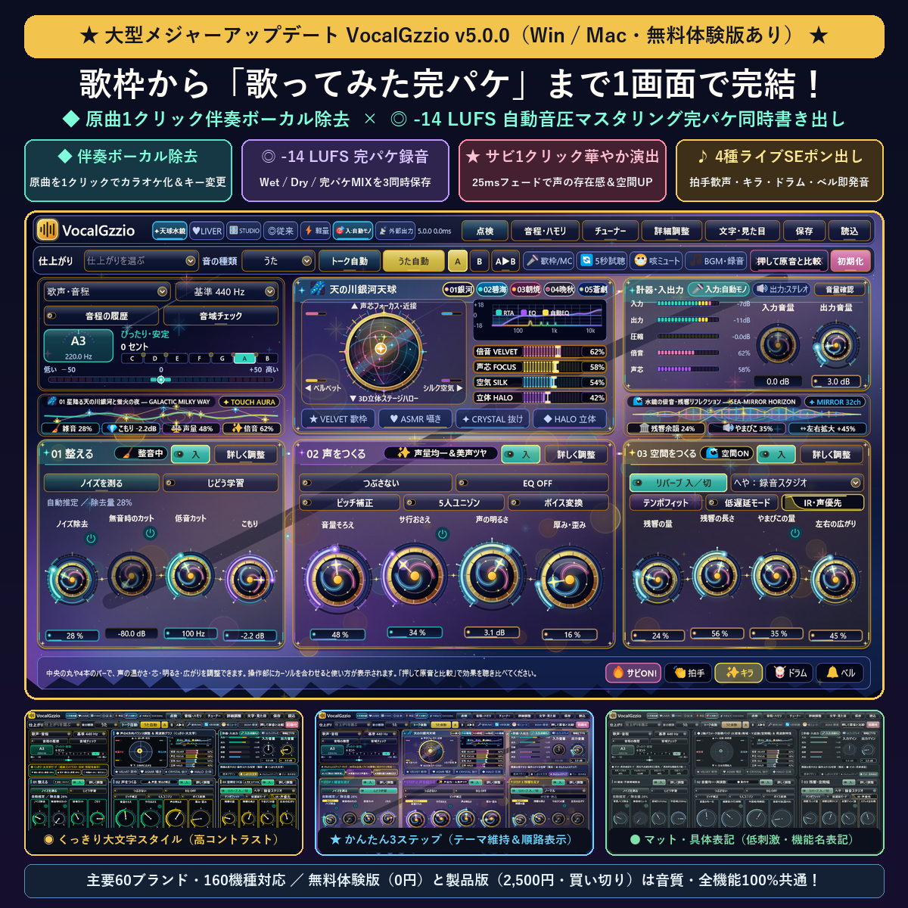

VocalGzzio 5.2.0 · Windows + Mac · Spectral Unmasker, BGM Rider & Room De-Reverb Suite
伴奏の「声ポケット」自動掘りも、部屋鳴り除去も、ラグ0msピッチ補正も。
歌枠と「歌ってみた」がこれ1画面で完結。
DAWも仮想ケーブルも防音室も不要。これ1つで歌枠配信・原曲カラオケ練習・歌ってみた完パケ録音・メタバース通話がすべて日本語1画面で完結。
🕳️声ポケット自動掘り、🎢伴奏追従ライダー、🏠ゼロ遅延・部屋鳴り除去、🌬️息継ぎ＆サ行セパレート、🎯0.08ms知能ピッチ補正、🎼伴奏キー＆BPM自動解析、🎙️4大名機マイクモデリング、💿-14 LUFS完パケMIX同時書き出し搭載。



✨原曲カラオケ化 ＆ 💿完パケ3種同時保存
伴奏音源の「✨ボーカル除去」とキー変更（±6半音）にワンクリック対応。録音や「⏪直前30秒保存」では、YouTube基準（-14 LUFS）の「完パケMIX（伴奏＋歌）」「完成声（Wet）」「素の声（Dry）」を同時書き出しします。
🔥サビ1クリック演出 ＆ 👏4種ライブSE
サビに入った瞬間に声を前に出しダブリングと残響を広げる「★サビ盛」と、歌い終わりやMCで即鳴らせる「👏拍手・✨キラ・🥁ジャン・🔔ピンポン」の4種ステレオSEパッドをフッターに常設。
🌌5大風景・🕰️歴代13世代タイムマシン ＆ 🎙️160機種対応
「01銀河〜05蒼劇」の5大風景と「◉くっきり大文字／★かんたん3ステップ／●マット・具体表記」切替に加え、初代v1.0.0〜v5.0.0の全13世代をオンデマンド省負荷（最大-80% CPU削減）で呼び出せる「🕰️世代タイムマシン」を搭載。AG03/Scarlett/MOTUからUSBマイク・Quest 3・clusterまで完全共存。
無料体験版（0円）と製品版（2,500円・買い切り）の違い
| 機能・項目 | 無料体験版（0円） | 製品版（2,500円・税込買い切り） |
|---|---|---|
| 音声エンジン・全19テーマ・4種の表示スタイル | ○ すべて同じ | ◎ すべて制限なし |
| 伴奏ボーカル除去・キー変更・完パケ録音・サビ演出・ライブSE | ○ お試し可能 | ◎ すべて制限なし |
| 連続使用時の音量制限 | 60秒ごとに0.6秒だけ音量が低下 | ◎ 音量低下なし（本番配信・録音にそのまま使用可能） |
| 設定・ノイズ学習・お気に入りテーマの自動保存＆読込 | ×（終了すると初期状態へリセット） | ◎ 完全対応（毎回起動0秒でいつもの声で歌える）＋A/B比較対応 |
| 商用利用・収益化配信・動画投稿・OS対応 | 相性確認用（公開・配信利用不可） | ◎ 商用・収益化・スパチャ歌枠・案件配信すべて自由（クレジット・報告不要）／Win＆Mac同梱（3台まで・無償アップデート対象） |
よくあるご質問（Q&A）— 歌枠配信者・活動者の方からよくいただく相談
| ご質問 | 回答 |
|---|---|
| Q1. DAW（音楽制作ソフト）がなくてもOBSだけで歌枠配信できますか？ | はい、DAW不要です！ 同梱の「単体起動アプリ（VocalGzzio.exe）」と専用仮想ドライバ「ライン (VocalGzzio Driver (WDM))」が入っているので、OBSのマイク音声に「ライン (VocalGzzio Driver (WDM))」を選ぶだけで直結できます。 |
| Q2. YAMAHA AG03 / AG06 や USBマイクでも使えますか？ | はい、すべて対応しています！ AG03MK2 / Scarlett / UR22C / MOTU M2 等はもちろん、AT2020USB-X / MV7+ / Yeti / QuadCast 等のUSBマイクでもそのまま使えます。AG03等の本体LOOPBACK切り忘れによるハウリングを自動遮断する安全ガードも内蔵しています。 |
| Q3. 自分の耳への返しは遅れませんか？声が二重になりませんか？ | ゼロ遅延（追加遅延0.0ms）対応です！ またインターフェース本体のダイレクトモニターを使う場合は、画面上の「🎧自分の耳への返しミュート」を1クリックするだけで、OBSへはエフェクト後の声を送り続けながら自分の耳への二重返しだけを消せます。 |
| Q4. カラオケ音源（インスト）がない曲でも歌えますか？キー変更は？ | はい！ 「🎵BGM・録音」に原曲ファイルを読み込んで「✨ボーカル除去」をONにするだけでその場でカラオケ伴奏化でき、±6半音のキー変更（歌声のピッチ補正キーも自動連動）も可能です。 |
| Q5. 歌枠の曲間の「雑談（MC）」でエコー（リバーブ）をすぐ切れますか？ | はい！ 上部の「🎤歌枠 ⇄ 💬雑談MC」を1クリックするだけで、華やかな歌枠サウンドから聞き取りやすい雑談声へ瞬時に切り替わります。 |
主要60ブランド・160機種以上のインターフェース＆購入目安
| 用途・予算帯 | おすすめ代表機種 | VocalGzzio v5.0.0 自動対応機能 |
|---|---|---|
| 🔰 1万円前後・USBマイク単体で手軽に | AT2020USB-XP / HyperX QuadCast / Blue Yeti / Shure MV7+ / Behringer UMC22 / M-Audio Solo / FIFINE SC3 | 「🌐全アプリ共存・共有モード」1クリックでASIO4ALL不要・他アプリの音を止めずに即動作 |
| 🎤 歌枠・雑談配信（1.5〜3万円台） | YAMAHA AG03MK2・AG06MK2 / audio-technica AT-UMX3 / Steinberg IXO12・UR22C / Elgato Wave XLR | 本体LOOPBACKスイッチ切り忘れ時のハウリング発振を0.35秒で自動検知し、耳への返しだけを安全ミュート |
| 🎸 歌ってみた宅録・DTM（2〜5万円台） | Focusrite Scarlett Solo・2i2 (Gen4) / MOTU M2・M4 / SSL 2 MKII / UA Volt 2 / Roland Rubix24・44 / Audient iD4・iD14 | Scarlett Soloの右ch（IN 2）マイクやRubix44等の4ch入力を自動追尾し、MOTUのIN 3-4ループバックを自動除外して中央L+Rへ配置 |
| 🚀 32-bit Float・ハイエンド機 | ZOOM UAC-232・UAC-432 / Steinberg URX22C・44C / RME Babyface Pro FS・Fireface / Apogee / Antelope / Neumann MT 48 | 0dBFS（|x|>1.0）超えの32bit Float入力を歪みなく自動パッド正規化。最大192kHzから48kHz配信バスへ高速リサンプリング |
| 🥽 VRメタバース・FPSゲーム通話 | Meta Quest 3・3S・2・Pro / Valve Index / VIVE / PICO 4 / Roland BRIDGE CAST / Sound Blaster GC7 / SteelSeries GameDAC | 「🛠cluster・通話 音消え一発修復」でWindows通信ダッキングや排他ロックを自動解除し、ワールド音と美声VCを完全両立 |
配布と対応環境
Windows 10 / 11の64ビット版で、VST3・単体起動アプリ・専用仮想ドライバ「VocalGzzio Driver (WDM)」（Microsoft WHQL署名済）を利用できます。Mac版はmacOS 11以降、Appleシリコン／Intel両対応で、VST3・AU・単体起動アプリとインストーラーを同梱しています（Mac版の導入・初回起動時のセキュリティ確認手順はこちら）。
製品版（2,500円買い切り・Win/Mac同梱）はBOOTHから取得できます（購入済みの方は購入履歴から無償でv5.2.0をダウンロード可能）。まずは0円の無料体験版で、ご自身の声と機材での変化をお確かめください。